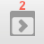
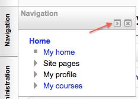
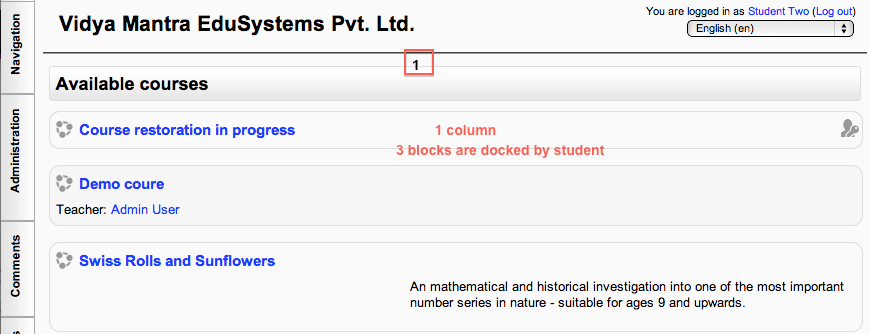
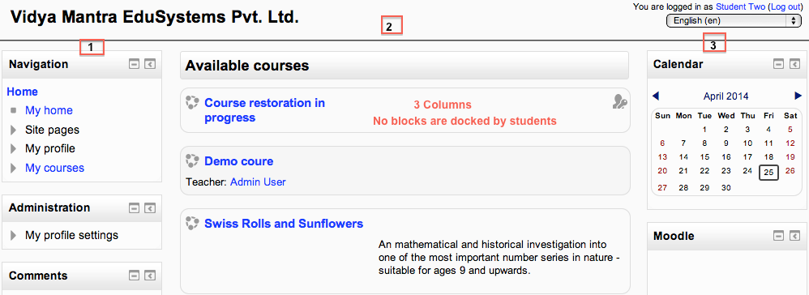

The dock is an area where blocks can be moved to and from this area with the block to dock (1) and dock to block (2) icons.
The dock area with 5 docked blocks and a block with the dock tool
The “docked” blocks appear as vertical tabs along the left margin attached to the page.
The docked block can expand into a menu with a click on the tab in the dock area. Clicking on the dock icon when a block is in the docked position, will move the block back to its original position.
It allows users an option of changing the look of a page on their screen. For example, a student could move all blocks to the dock, creating a 1 column effect.
A student moves all blocks to the dock area - 1 column
A student un-docks all blocks - 3 column